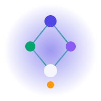
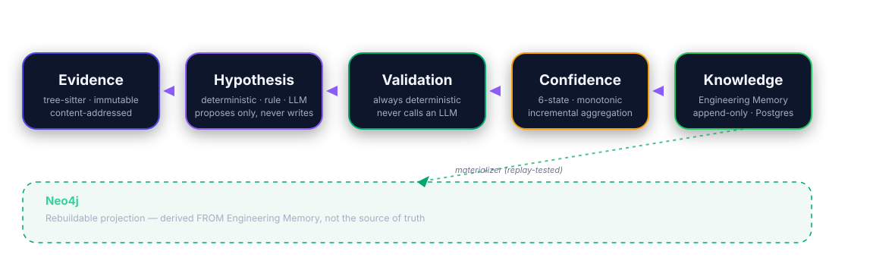
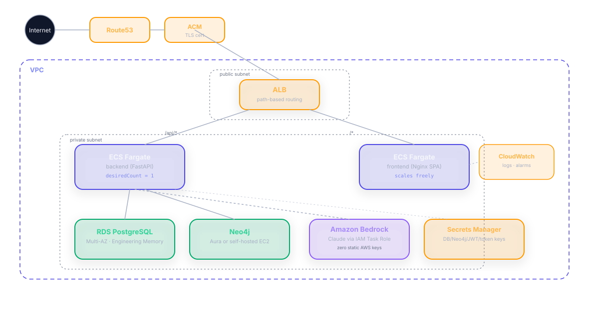

The AI Engineering Intelligence Platform — a persistent Knowledge Graph where every claim is evidence-gated before it's trusted.
Why this exists, why other tools fall short
Engineering Memory, Knowledge Engine, Neo4j
Validators, confidence, hallucination defense
24-repo validation suite, engineering rigor
AWS deployment, live walkthrough
What's real, what's next, what isn't done
Engineering knowledge lives in people's heads — and evaporates the moment they're unavailable.
"I want the graph to know what I know — so it survives me being on vacation. Or leaving."
A schema change silently breaks two other services — no one connects the dots until CI fails.
"Who owns this" is a Slack question, not a query.
Every incident's lesson is re-learned by the next engineer who hits it.
Fifteen minutes across four tools just to start a ticket.
| Chatbot AI | PR-bot point solutions | Jira AI add-ons | GraphForge | |
|---|---|---|---|---|
| Memory across sessions | No | Per-PR only | Per-ticket only | Persistent, org-wide |
| Cross-system reasoning | No | No | No | Code ↔ tickets ↔ docs |
| Deterministic grounding | No | Diff-only | No | Graph-verified |
| Extensible to new agents | N/A | No | No | Typed agent framework |
We don't compete on "better prompts."We compete on having a graph the others don't — and a framework where every new agent makes the existing ones smarter.
If a feature isn't a graph read or a graph write, it's a plugin bolted on — not part of the product.
Deterministic core. Evidence-gated AI layer. One graph.
Code, docs, tickets, tests — one schema
Specialized agents, shared context
AI anchored to computed fact
Idea → build → review → release
Dense, fast, evidence-linked
Evidence → Hypothesis → Validation → Confidence → Knowledge.

-- append-only: no UPDATE path exists
-- on this table, anywhere in the codebase
SELECT relationship_key, confidence_state,
sequence, created_at
FROM knowledge_relationships
WHERE relationship_key = 'order-service:CALLS:payment-service'
ORDER BY sequence DESC
LIMIT 1; -- "current" = latest, not stored
The hard rule"A validator that asks an LLM 'does this seem right' isn't validating — it's generating a second, uncoordinated guess."
Literal annotation / topic matches
Feign / Kafka / dependency-coordinate rules
One class, four keyword tables — new tech = new row, never new code
Proven, not assertedParity-tested to reproduce our pre-existing hand-assigned trust labels exactly.
Honest caveatProven correct — but not yet the live write path. Today's writes still go direct to Neo4j; this is shadow-mode, proven, ready for cutover.
Feign-client relationships, persisted to Engineering Memory
Kafka producer/consumer topic overlap
Dependency-coordinate matches
Known, numbered, root-causedFeign matching breaks on <domain>-service-<language> naming; Kafka detection is literal-string-only. Found by our own 24-repo validation suite — not by a judge.
The LLM proposes and narrates. It never decides what's true.
APIs, DBs, queues, dependencies
Blast-radius computation
Filtered, confidence-aware search
Cycles, shared DBs, ownership gaps
"What breaks if I remove this"
Composes the above, no NL parsing
13 capability types, closed
Returns hypotheses only
Lowest trust, until confirmed
Only from its own cited evidence
Never one model alone
Off by default. enable_frontier_llm_generator = False — real precision hasn't been measured yet, so it doesn't ship live by accident.
Never writes to Neo4j, Postgres, or the repository — a pure narration layer over deterministic facts.
Direct/downstream counts are intra-repository noise today — cross-repo edges aren't yet queryable here. Documented, not hidden.
Cannot cross repositories today — a traversal-filter bug, not a missing feature. Blast radius = itself, until fixed.
We built a black-box test suite to catch our own mistakes.
"Does not reimplement any GraphForge logic — every fact comes from GraphForge's own REST API, called exactly the way the app itself calls it."
Zero static AWS keys. Anywhere.

Real repositories. Real git history. Same pipeline as production.
total → totalCents
HIGH — zero LLM calls
All 4 downstream listeners
Deploy order, generated
Every listener across both Kafka topics is correctly flagged — impact analysis is file-level, not field-level. Not a bug.
Engineering rigor as the actual differentiator.
An LLM claim cannot become trusted knowledge without independent, deterministic corroboration — enforced by interface design, not convention.
Proven by a real replay test
New tech = keyword row, never new code
A validator's signature has no LLM to reach for
Predictable latency as the graph grows
Incremental, never re-scans history
Until durable background execution ships
Doesn't scale past a handful of repos yet
Bedrock via boto3's default credential chain
Tokens/API keys via Fernet before they touch Postgres
Production refuses to boot on a dev-default secret
Honest gap: no application-level rate limiting yet — WAF at the edge is the recommended, not-yet-implemented mitigation.
Unbounded full-graph read → hop-bounded neighborhood: O(every repo) → O(1) once a repository is known.
Mid-loop synthesis capped at 1 call after observing a real 92s → 165s test-suite regression at a budget of 2.
Literal-string-only — no shared-SDK-wrapper support, no Python extractor yet.
Suffix-only normalization breaks on <domain>-service-<language> naming.
A traversal-filter bug — root-caused, not a missing feature.
Same root cause as our own Parity validation failures — one fix, two symptoms closed.
First non-parser language via the generic path
Anti-correlation cap already designed in
Infra manifests first, runtime telemetry last
No rearchitecture required — every future RFC is an additive plug into the same five-stage pipeline you already saw.
"Ask a senior engineer" — minutes to hours, blocked on availability.
Assembled before you finish reading the ticket — self-serve, evidence-linked.
Not yet measured with real users — this is a defensible framing, not a validated ROI number. We say so directly.
No claim trusted without independent proof
Postgres source, Neo4j projection
Four known limitations, self-found, root-caused
Every claim this system makes can be traced to real evidence. Every gap in it can be traced to a real, named, already-diagnosed reason.
Ask us anything — architecture, AI, AWS, engineering, or the gaps we haven't closed yet.